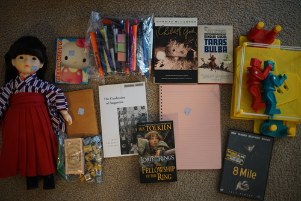
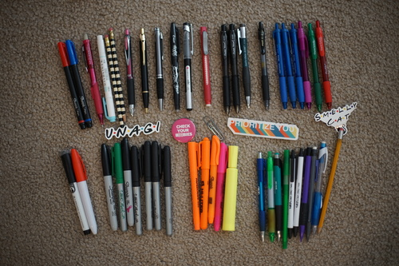
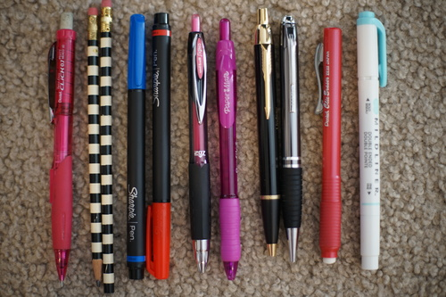
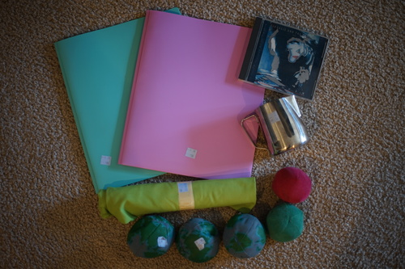

i just want to announce to everyone that i finally saw a customer arrive at my hummingbird feeder this morning. i heard one yesterday as well at the bush pictured above, but the juice i made was still inside cooling down!!
Ryan's
Ryan's
Ryan's. I was going to buy it but it wasn't pink so I let Ryan buy it.
Ryan's
Ryan's
Ryan's
It somehow escaped the photo.
I don't really collect non-BJD dolls, but once in a while one will catch my eye. I could not put this girl down! I love her taisho roman outfit. I think she's "Mineko"? I found an auction of one that aaaaalmost matches her.
Here are the contents of the bag. A sticker that says "unagi" in the friends font?? why?? anyway i bought it because i saw a parker pen inside.
and the ones i'm keeping. the parker pen is engraved "lindsay" but i'd prefer if you did not call me lindsay. it looks to be the IM model but the gold band is a bit thinner than the ones i see online. I like the pink signo 207 too. there's an adler pen in there too but it feels cheap af. i released the pens, pencils, highlighters ive collected and do not want among my coworkers.
I tried the parker pen and honestly it feels like a 10 cent bic ballpoint pen other than the weighty body. im not impressed. the cute pink signo is my favorite out of the bag.

and the sochi pin!! this one is 2014, but i really love the designs of 2010 russian olympic wear. i was in vancouver the summer after the 2010 olympics and found a beautiful russia coat on clearance... for $300. i didnt even try to convince my mom to buy it for me but it will live on in my heart. i might have bought it if i found it today tbh. hey if you wanna donate your 2010 olympic russia coats because of current events, let me know first!!! i will be there.
Ryan's
I was on the fence about buying this one but i thought i'd try it.
it has measuring marks inside! thats awesome!!
purely for bad photoshop activities
i have no idea why ryan needs 5 hacky sacks